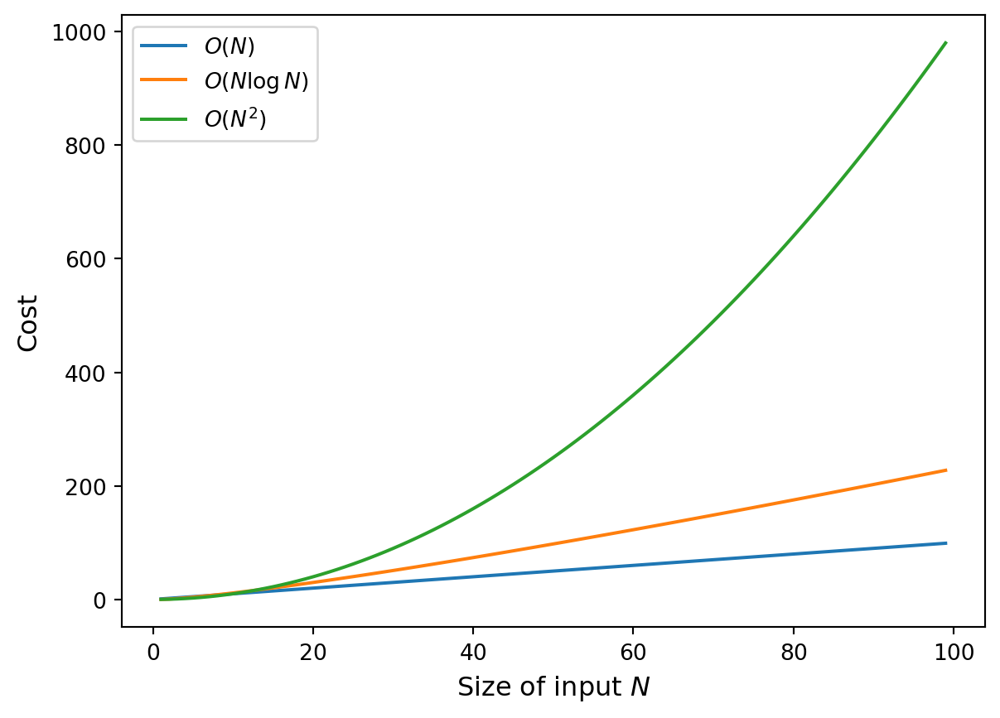

![]()

Performance of big data problems I
Issues affecting performance of large data tasks and approaches for scaling computations
Introduction: performance issues
Particularly when dealing with “big data”, the size of the datasets and the resources at our disposal impose limits on what computations we can realistically do.
Even when a solution for a problem exists in theory, in practice we are bound by limited resources:
- Memory size: can we keep everything we need in memory or do we need to write to the disk often?
- Processing power: do we have enough processors to complete the computation in a reasonable time?
- Network bandwidth: can we transfer everything we need?
Learning outcomes
- Identify key issues affecting the performance of data analysis tasks.
- Use ‘big O’ notation to describe the scaling behaviour of algorithms.
- Assess the benefits and drawbacks of using cloud services to scale computations.
- Explain how we can break down and distribute large computational tasks.
Problem scaling
Just because we can solve a problem on a small dataset doesn’t guarantee that we can do it for large ones!
We must also consider the scaling behaviour: a dataset that is 10x larger may require much more than 10x longer to process.
How an algorithm scales with the input size \(N\) can be expressed in asymptotic ‘big-O’ notation. For example:
- \(O(\log N)\): logarithmic in the size of the input.
- \(O(N)\): linear in the size of the input.
- \(O(N^2)\): quadratic in the size of the input.
- \(O(2^N)\): exponential in the size of the input.
Problem scaling
The scaling behaviour of an algorithm can have a significant effect in how it can handle large input data:
Improving resources
An obvious approach is to throw more resources at the problem: more memory, faster networks, better processors. However:
- We need to make sure it’s the right resource! Hence: profiling to understand resource consumption and bottlenecks.
- More resource is not always available.
- There may be other considerations e.g. energy consumption.
Cloud computing
A paradigm that is becoming very popular recently is the use of cloud resources: storage and computing resources held remotely and available on demand.
We saw an example of this in Lecture 22 when downloading data from S3 (Amazon Web Services).
Major providers include Amazon Web Services, Microsoft Azure and Google Cloud Platform.
Cloud resources
Cloud providers offer a variety of resources, such as:
- Storage (both files and various databases).
- Compute (virtual machines, clusters for parallel computing).
- Services (instances of popular programs like Tensorflow).
Cloud computing advantages
This offers several advantages:
- Flexibility: resources can be requested as and when needed, and can be scaled up or down depending on requirements.
- No maintenance: updates are usually taken care of automatically by the provider.
- Ease of setup: can use a service without worrying about setting up the infrastructure for it.
Cloud computing disadvantages
However, there are also considerations to keep in mind:
- Cost: can be difficult to predict.
- Limited customisability compared to setting it up yourself.
- Geographical constraints for data storage and processing (e.g. latency, personal data).
Alternative approaches
Instead of using more or bigger resources, we could look at different kinds of technologies and computational approaches:
- Different language(s), libraries, algorithms.
- Accelerator devices such as graphics processing units.
- Parallel and distributed processing on multiple processors or a cluster.
These usually involve more work in adapting the solution but, if effective, can yield important benefits.
A small resource (e.g. computer) can handle a small task:

Faced with a large task, instead of increasing size of resource…
…break it down into smaller tasks:

This is still not trivial:
- Does the algorithm support it?
- Can we efficiently combine results?
- Is there support for doing it on the hardware?
Changing algorithms
- Reformulate in different steps that allow separation.
- Maximize degree of parallelism.
- Minimize communication.
- Maintain correctness, avoid problems e.g. deadlock.
MapReduce
How do we efficiently break down tasks and combine results?

- Break down data into smaller chunks.
- Handle each chunk separately.
- Group together results from smaller chunks.
- Combine smaller results to form result from whole input.
Example: MapReduce in Python
We can construct a very minimal (and non-parallelised) Python implementation of a MapReduce ‘engine’ as follows
Example: counting characters
As an example task imagine we want to count the number of occurrences of each character in a sentence.
We can apply mapreduce by
- using the mapper to assign a partial count of 1 to each character,
- the grouper then gathers the partial counts for each character,
- and the reducer sums the counts to outputs the counts per character.
In code:
{'T': 1, 'h': 2, 'e': 3, ' ': 8, 'q': 1, 'u': 2, 'i': 1, 'c': 1, 'k': 1, 'b': 1, 'r': 2, 'o': 4, 'w': 1, 'n': 1, 'f': 1, 'x': 1, 'j': 1, 'm': 1, 'p': 1, 's': 1, 'v': 1, 't': 1, 'l': 1, 'a': 1, 'z': 1, 'y': 1, 'd': 1, 'g': 1, '.': 1}Or sorting the output:
print(dict(sorted(character_counts.items()))){' ': 8, '.': 1, 'T': 1, 'a': 1, 'b': 1, 'c': 1, 'd': 1, 'e': 3, 'f': 1, 'g': 1, 'h': 2, 'i': 1, 'j': 1, 'k': 1, 'l': 1, 'm': 1, 'n': 1, 'o': 4, 'p': 1, 'q': 1, 'r': 2, 's': 1, 't': 1, 'u': 2, 'v': 1, 'w': 1, 'x': 1, 'y': 1, 'z': 1}Summary
- The size of big data poses difficulties on conventional processing.
- Using more powerful resources is a possibility, but sometimes a paradigm change is needed.
- Conversion (such as by distributing computation) is not always straightforward but frameworks offer support.